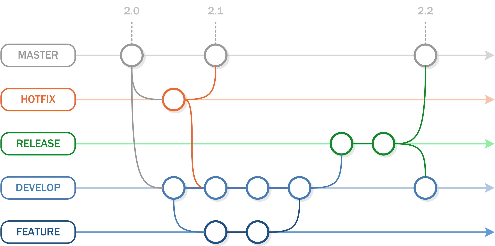
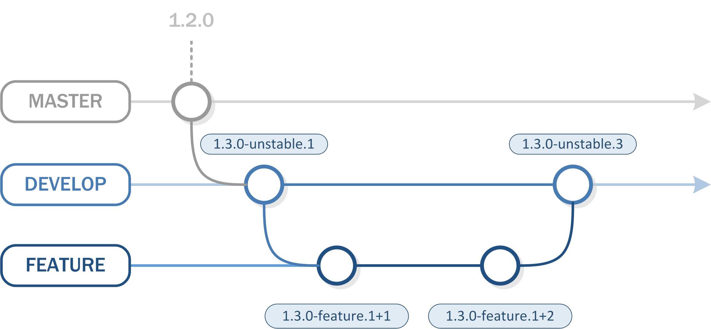
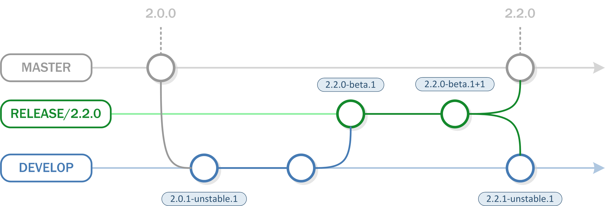
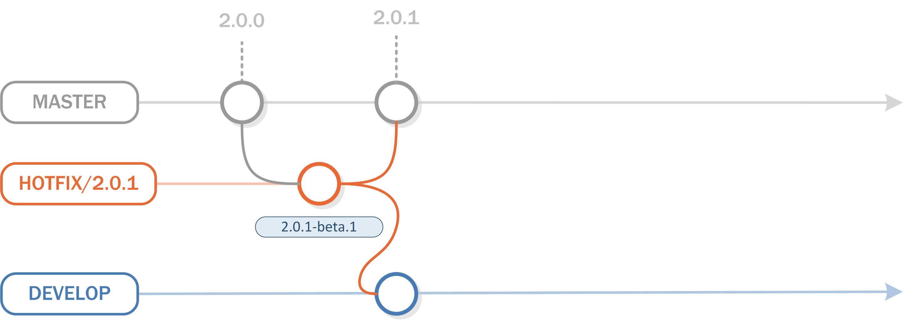

Contribute
All projects in devacfr follow some rules and conventions of development in general to facilitate and unify the development tasks.
Code Conventions
This chapter describes how developers (contributors) should write code. The reasoning of these styles and conventions is mainly for consistency, readability and maintainability reasons.
Generic Code Style and Convention
All working files (java, xml, others) should respect the following conventions:
- Trailing Whitespaces, remove all trailing white-spaces
- Indentation, never use tabs! (4 spaces)
- Line wrapping, always use a 120-column line width
Java Code Covention
Our basic style guide for Java is to use Sun’s Java guide Code Conventions for the Java TM Programming Language, but we do have a few subtle differences.
- White space: One space after control statements and between arguments (i.e. if ( foo ) instead of if(foo)), myFunc( foo, bar, baz ) instead of myFunc(foo,bar,baz)). No spaces after methods names (i.e. void myMethod(), myMethod( "foo" ))
- Indentation: Always use 4 space indents and never use tabs!
- Blocks: Always enclose with a new line brace.
- Line wrapping: Always use a 120-column line width for Java code and Javadoc.
- Design idioms: Avoid creating internal objects as much as possible. Favor dependency injection whenever possible. Make appropriate use of Spring.
- Organization: Avoid using a lot of public inner classes. Prefer interfaces instead of default implementation.
- Modifier:Avoid using final modifier on all member variables and arguments. Prefer using private or protected member instead of public member.
- Standard Annotations: Use @Override where required, use @Deprecated when something is deprecated, but still functions, and use @SuppressWarnings only when it’s impossible to eliminate the warning.
- Exceptions: Throw meaningful exceptions to makes debugging and testing more easy. If you’re not doing anything meaningful with an exception, throw it to the caller. Wrapping with a RuntimeException is fine if it’s an exception that is only going to occur in the event of a programming error rather than a logical error (i.e. the same reason why unchecked exceptions exist in the first place).
- Scope: Limit scope as much as possible. If you have a member that is a private part of your interface, but that you need to get access to for testing (such as an internal constant), make it package private (default).
- Documentation: Document public interfaces well, i.e. all non-trivial public and protected functions should include Javadoc that indicates what it does, expected inputs, return values, exceptions thrown, and any implementation notes.
- Do not include authorship information.
- Don’t waste time with redundant and obvious comments. This means getters and setters probably don’t need comments at all.
- Use the notation TODO: comment when leaving a comment about future work that needs to be done. This is automatically picked up by Eclipse the auto generated Taglist report and other editors, and it makes finding them useful. Don’t put user ids or specific dates.
- Testing: All non-trivial public classes should include a corresponding unit test. We use JUnit, PowerMock, Mockito and EasyMock (preferred) to make testing easier. Patches will be refused without corresponding test cases. Classes should have all feasible branches covered, any branch that isn’t covered must be explained in comments.
Naming
- Treat acronyms as words. This means “HtmlParser” and not “HTMLParser”. Java’s standard libraries are inconsistent about this, but we shouldn’t be.
- Constants (static final members) should always use an ALL_CAPS form.
- Enum values should always capitalized and camel case.
- Use short, descriptive names for your classes and functions.
Versioning Naming Convention
The version name is normalized according to Semantic Versioning and the Continuous Deployment strategy used. The mandatory pattern is the following:
<version-major>.<version-minor>.<patch-version>-<tag-release-prefix>.{n}
- tag-release-prefix is mandatory and specific for each development phase.
- where n = how many commits in a branch or the distance from latest annotated tag, except for commits which are explicitly tagged as stable.
DON’T PANIC, this convention is automated. Your job is limited to choice the appropriate next version.
Issue Tracking Conventions
The Contributor SHOULD use GitHub. Here is the workflow apply to project.
Try to create as many two-way links between Git changesets and GitHub as possible:
- If possible, refer to a specific issue ID in every commit log message.
- When appending information to an issue (to describe progress or to close the issue) name the revision number(s) responsible for the change.
Here’s an example of what such a commit message could look like:
Added some cool new feature. #17
- task performed
- ...
When you commit a change to the repository, make sure your change reflects a single purpose: the fixing of a specific bug, the addition of a new feature, or some particular task.
When to create a GitHub issue ?
When to create a GitHub issue versus just committing a change. Minor changes, like code reformatting, documentation fixes, etc. that aren’t going to impact other users can be committed without much issue. Larger changes, like bug fixes, API changes, significant refactoring, new classes, and pretty much any change of more than 100 lines, should have a GitHub ticket associated with it, or at least an discussion.
- Search in GitHub for an issue similar to the one you might want to create. If you have a stacktrace try to search for the description in the outmost frame.
- If you’re not on the newest version, you may also check the changelog if the issue is already fixed in a more recent version.
- File your issue with the right type (bug, enhancement, new feature, task,…) in GitHub, choosing the right component.
- Are you able to work around the issue or has it stopped your usage of application in its tracks? This should probably be a hint how to define the priority.
Release Management
The workflow used is Gitflow workflow from Vincent Driessen at nvie. This workflow is supported in project by serveral tools:
- Git, Git extension git-flow and Git client SourceTree, of course.
- maven and JGit Flow maven plugin, allows executing Gitflow workflow actions according to the configuration stored in maven pom.xml.
The Gitflow Workflow defines a strict branching model designed around the project release. While somewhat more complicated than the Feature Branch Workflow, this provides a robust framework for managing larger projects. This workflow doesn’t add any new concepts or commands beyond what’s required for the Feature Branch Workflow. Instead, it assigns very specific roles to different branches and defines how and when they should interact. In addition to feature branches, it uses individual branches for preparing, maintaining, and recording releases. Of course, you also get to leverage all the benefits of the Feature Branch Workflow: pull requests, isolated experiments, and more efficient collaboration.
Gitflow Workflow In Action
The Gitflow Workflow still uses a central repository as the communication hub for all developers. And, as in the other workflows, developers work locally and push branches to the central repo. The only difference is the branch structure of the project.
Instead of a single master branch, this workflow uses two branches to record the history of the project. The master branch stores the official release history, and the develop branch serves as an integration branch for features. It’s also convenient to tag all commits in the master branch with a version number.

The rest of this workflow revolves around the distinction between these two branches.
Feature Branches
Each new feature should reside in its own branch, which can be pushed to the central repository for backup/collaboration. But, instead of branching off of master, feature branches use develop as their parent branch. When a feature is complete, it gets merged back into develop. Features should never interact directly with master.
Common conventions:
- branch off: develop
- merge into: develop
- naming convention: feature/*

After the feature branch is merged, the version on develop is 1.3.0-unstable.3. This is due to develop running in continuous deployment mode.
Using Feature Branch
In general, one issue in GitHub corresponds to one feature branch in Git. Instead to create new branch directly from Git, do the following steps:
- Open a terminal, by changing directory to the root of project.
- Create feature branch using maven-jgitflow-plugin.
- Give name to the branch with prefix of a specific issue ID as PROJ-1234-add-new-feature to create as many two-way links between Git changeset, GitHub issue and CI build.
$ mvn jgitflow:feature-start [INFO] Scanning for projects... [INFO] ------------------------------------------------------------------------ [INFO] Reactor Build Order: [INFO] [INFO] Foo project [INFO] core [INFO] webapp [INFO] [INFO] ------------------------------------------------------------------------ [INFO] Building Foo project 1.0.0-SNAPSHOT [INFO] ------------------------------------------------------------------------ [INFO] [INFO] --- jgitflow-maven-plugin:1.0-m5.1:feature-start (default-cli) @foo --- [INFO] (develop) Checking for SNAPSHOT version in projects... [INFO] (develop) Checking dependencies and plugins for snapshots ... What is the feature branch name? feature/: 78-new-feature [INFO] ------------------------------------------------------------------------ [INFO] Reactor Summary: [INFO] [INFO] Foo project ............................. SUCCESS [ 56.666 s] [INFO] core .................................... SKIPPED [INFO] webapp .................................. SKIPPED [INFO] ------------------------------------------------------------------------ [INFO] BUILD SUCCESS [INFO] ------------------------------------------------------------------------ [INFO] Total time: 59.370 s [INFO] Finished at: 2015-08-06T10:12:28+02:00 [INFO] Final Memory: 11M/39M [INFO] ------------------------------------------------------------------------
Tips, click on Terminal button in SourceTree to open a Bash command prompt directly on the root directory of project.
This command creates a new feature branch; prompts for the branch name which will take the format feature/{branch name}. Add -DpushFeatures=true to push the branch to origin automatically.
When the feature is complete, execute the following command to merge the feature branch to develop branch:
$ mvn jgitflow:feature-finish -Pfull [INFO] Scanning for projects... [INFO] ------------------------------------------------------------------------ [INFO] Reactor Build Order: [INFO] [INFO] Foo project [INFO] core [INFO] webapp [INFO] [INFO] ------------------------------------------------------------------------ [INFO] Building Foo project 1.0.1-SNAPSHOT [INFO] ------------------------------------------------------------------------ [INFO] [INFO] --- jgitflow-maven-plugin:1.0-m5.1:feature-finish (default-cli) @ foo --- What is the feature branch name? feature/ 1: 78-new-feature 2: 47-another-feature Choose a number (1/2) [1]: 1 [INFO] running jgitflow feature finish... [INFO] Executing: cmd.exe /X /C "F:\development\tools\local\maven\apache-maven-3.2.3\bin\..\bin\mvn -s C:\Temp\release-settings6432120503142207031.xml clean install --no-plugin-updates -Penforcer-rules -Pjcenter" ... [INFO] ------------------------------------------------------------------------ [INFO] Reactor Summary: [INFO] [INFO] Foo project ............................. SUCCESS [11:38 min] [INFO] core .................................... SKIPPED [INFO] webapp .................................. SKIPPED [INFO] ------------------------------------------------------------------------ [INFO] BUILD SUCCESS [INFO] ------------------------------------------------------------------------ [INFO] Total time: 11:39 min [INFO] Finished at: 2015-08-06T11:06:51+02:00 [INFO] Final Memory: 12M/33M [INFO] ------------------------------------------------------------------------
This command executes tests and merges a feature branch back into the develop branch and add -DpushFeatures=true to push the branch to origin automatically.
Note that feature branches combined with the develop branch is, for all intents and purposes, the Feature Branch Workflow.
Release Branches
Using a dedicated branch to prepare releases makes it possible for one team to polish the current release while another team continues working on features for the next release. It also creates well-defined phases of development (e.g., it‘s easy to say, “this week we’re preparing for version 4.0” and to actually see it in the structure of the repository).
Common conventions:
- branch off: develop
- merge into: master and develop
- naming convention: release/{version} eg release/2.2.0

The release version is extracted from branch name or the first version tag placed on the release branch. Note that at least one version tag required on the branch. the recommended initial tag is {releaseVersion}-alpha1.
Release Checklist
There are any Tasks to do while the Release Phase:
- Publish distribution package for user acceptance testing and bug fixing.
- Execute functional tests.
- Update and review documentation.
- Update CHANGELOG distribution file and release notes documentation.
- update latest version in Apache Server configuration.
- Release version in GitHub.
- Announcements.
- Congratulations.
Using Release Branch
Once develop has acquired enough features for a release (or a predetermined release date is approaching), you fork a release branch off of develop. Creating this branch starts the next release cycle, so no new features can be added after this point—only bug fixes, documentation generation, and other release-oriented tasks should go in this branch.
$ mvn clean install -PskipTests -> install the last version in your local repository ... $ mvn jgitflow:release-start -DreleaseVersion=1.1.0 -Pfull [INFO] Scanning for projects... [INFO] ------------------------------------------------------------------------ [INFO] Reactor Build Order: [INFO] [INFO] Foo project [INFO] core [INFO] webapp [INFO] doc [INFO] Functional Test Module [INFO] Foo Distribution [INFO] [INFO] ------------------------------------------------------------------------ [INFO] Building Foo project 1.1.0-SNAPSHOT [INFO] ------------------------------------------------------------------------ [INFO] [INFO] --- jgitflow-maven-plugin:1.0-m5.1:release-start (default-cli) @ Foo project --- [INFO] (develop) Checking for SNAPSHOT version in projects... [INFO] (develop) Checking dependencies and plugins for snapshots ... [INFO] (release/1.1.0) adding snapshot to pom versions... [INFO] (release/1.1.0) updating poms for all projects... [INFO] turn on debug logging with -X to see exact changes [INFO] (release/1.1.0) updating pom for Foo project [INFO] (release/1.1.0) updating pom for core [INFO] (release/1.1.0) updating pom for webapp [INFO] (release/1.1.0) updating pom for doc [INFO] (release/1.1.0) updating pom for Functional Test Module [INFO] (release/1.1.0) updating pom for Foo Distribution What is the development version for "Foo project"? (org.devacfr.foo:foo) [1.1.1-SNAPSHOT]: 1.2.0-SNAPSHOT [INFO] (develop) updating poms with next development version... [INFO] (develop) updating poms for all projects... [INFO] turn on debug logging with -X to see exact changes [INFO] (develop) updating pom for Foo project [INFO] (develop) updating pom for core [INFO] (develop) updating pom for webapp [INFO] (develop) updating pom for doc [INFO] (develop) updating pom for Functional Test Module [INFO] (develop) updating pom for Foo Distribution [INFO] ------------------------------------------------------------------------ [INFO] Reactor Summary: [INFO] [INFO] Foo project ........................................ SUCCESS [ 56.666 s] [INFO] core ............................................... SKIPPED [INFO] webapp ............................................. SKIPPED [INFO] doc ................................................ SKIPPED [INFO] Functional Test Module ............................. SKIPPED [INFO] Foo Distribution ................................... SKIPPED [INFO] ------------------------------------------------------------------------ [INFO] BUILD SUCCESS [INFO] ------------------------------------------------------------------------ [INFO] Total time: 51.952 s [INFO] Finished at: 2015-10-20T10:10:39+02:00 [INFO] Final Memory: 11M/37M [INFO] ------------------------------------------------------------------------
Once it’s ready to ship, the release gets merged into master and tagged with a version number. In addition, it should be merged back into develop, which may have progressed since the release was initiated.
$ mvn jgitflow:release-finish -Pfull [INFO] Scanning for projects... [INFO] ------------------------------------------------------------------------ [INFO] Reactor Build Order: [INFO] [INFO] Foo project [INFO] core [INFO] webapp [INFO] doc [INFO] Functional Test Module [INFO] Foo Distribution [INFO] [INFO] ------------------------------------------------------------------------ [INFO] Building TPD project 1.1.0-SNAPSHOT [INFO] ------------------------------------------------------------------------ [INFO] [INFO] --- jgitflow-maven-plugin:1.0-m5.1:release-finish (default-cli) @ Foo project --- [INFO] running jgitflow release finish... [INFO] (release/1.1.0) Updating poms for RELEASE [INFO] (release/1.1.0) removing snapshot from pom versions... [INFO] (release/1.1.0) updating poms for all projects... [INFO] turn on debug logging with -X to see exact changes [INFO] (release/1.1.0) updating pom for Foo project [INFO] (release/1.1.0) updating pom for core [INFO] (release/1.1.0) updating pom for webapp [INFO] (release/1.1.0) updating pom for doc [INFO] (release/1.1.0) updating pom for Foo Distribution [INFO] Executing: cmd.exe /X /C "F:\development\tools\local\maven\apache-maven-3.2.5\bin\..\bin\mvn -s C:\Temp\release-settings2749399463239700451.xml" ... [INFO] (develop) copying pom versions... [INFO] (develop) updating poms for all projects... [INFO] turn on debug logging with -X to see exact changes [INFO] (develop) updating pom for Foo project [INFO] (develop) updating pom for core [INFO] (develop) updating pom for webapp [INFO] (develop) updating pom for doc [INFO] (develop) updating pom for Foo Distribution [INFO] copying pom versions... [INFO] (develop) updating poms for all projects... [INFO] turn on debug logging with -X to see exact changes [INFO] (develop) updating pom for Foo project [INFO] (develop) updating pom for core [INFO] (develop) updating pom for webapp [INFO] (develop) updating pom for doc [INFO] (develop) updating pom for Foo Distribution [INFO] ------------------------------------------------------------------------ [INFO] Reactor Summary: [INFO] [INFO] Foo project ........................................ SUCCESS [ 56.666 s] [INFO] core ............................................... SKIPPED [INFO] webapp ............................................. SKIPPED [INFO] doc ................................................ SKIPPED [INFO] Foo Distribution ................................... SKIPPED [INFO] ------------------------------------------------------------------------ [INFO] BUILD SUCCESS [INFO] ------------------------------------------------------------------------ [INFO] Total time: 11:39 min [INFO] Finished at: 2015-08-06T11:06:51+02:00 [INFO] Final Memory: 12M/33M [INFO] ------------------------------------------------------------------------
Maintenance Branches
Maintenance or “hotfix” branches are used to quickly patch production releases. This is the only branch that should fork directly off of master. As soon as the fix is complete, it should be merged into both master and develop (or the current release branch), and master should be tagged with an updated version number.
Common conventions:
- branch off: master
- merge into: master
- naming convention: hotfix/{version} eg hotfix/2.0.1

Using Maintenance Branch
In general, one BUGFIX issue in GitHub corresponds to one maintenance branch in Git, but you can include more than one BUGFIX issues to a same maintenance branch. The main Gitflow restriction is you couldn’t create a second maintenance branch in same time whether one already exists. Instead to create new branch directly from Git, do the following steps:
- Open a terminal, by changing directory to the root of project.
- Create maintenance branch using maven-jgitflow-plugin.
$ mvn jgitflow:hotfix-start [INFO] Scanning for projects... [INFO] ------------------------------------------------------------------------ [INFO] Reactor Build Order: [INFO] [INFO] Foo project [INFO] core [INFO] webapp [INFO] [INFO] ------------------------------------------------------------------------ [INFO] Building Foo project 1.0.2-SNAPSHOT [INFO] ------------------------------------------------------------------------ [INFO] [INFO] (master) Checking for RELEASE version in projects... [INFO] (master) Checking dependencies and plugins for snapshots ... What is the hotfix version for "Foo project"? (org.devacfr.foo:foo) [1.0.3]: 1.0.3 ... [INFO] ------------------------------------------------------------------------ [INFO] Reactor Summary: [INFO] [INFO] Foo project ........................................ SUCCESS [ 56.666 s] [INFO] core ............................................... SKIPPED [INFO] webapp ............................................. SKIPPED [INFO] ------------------------------------------------------------------------ [INFO] BUILD SUCCESS [INFO] ------------------------------------------------------------------------ [INFO] Total time: 59.370 s [INFO] Finished at: 2015-08-06T10:12:28+02:00 [INFO] Final Memory: 11M/39M [INFO] ------------------------------------------------------------------------
This command creates a new maintenance branch; prompts for the hotfix version (i.e. branch name) which will take the format hotfix/{version}.
When the hotfix is complete, execute the following command to merge the maintenance branch to develop and master branches:
$ mvn jgitflow:hotfix-finish -P full
Having a dedicated line of development for bug fixes lets your team address issues without interrupting the rest of the workflow or waiting for the next release cycle. You can think of maintenance branches as ad hoc release branches that work directly with master.